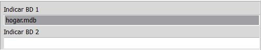
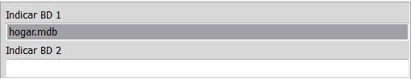
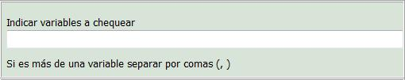
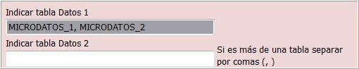
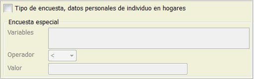

Consiste en comprobar si dos bases de datos relacionadas son coherentes. Es decir si el valor de unas variables comunes en las dos bases de datos se encuentran en ambas.
Chequear población está dividido en 5 paneles.
1er panel:

2º panel:

En este panel se indica las tablas de cada una de las bases de datos, por defecto la/s tabla/s primeras serán las que se encuentran abiertas en TEIDE2. Se indicarán las tablas secundarias.
3er panel:

En este panel se indicará que variables se quieren chequear, si es más de una se separarán por (, )
4º panel:

Si también queremos indicar cuántas veces se tienen que repetir las combinaciones indicadas, lo podemos hacer indicando cual es la variable de conteo, es decir que variable indica el número de repeticiones. Y a su vez se puede indicar si queremos el 100% de ese valor o un porcentaje diferente (entre 1-100).
5º panel:

Este panel es para un tipo de encuesta especial, son aquellas en las que para calcular el número de repeticiones, además de disponer de la variable de conteo y de un porcentaje, también indicaremos una condición. Poniendo las variables (deben estar en la primera base de datos) y los valores a cumplir.